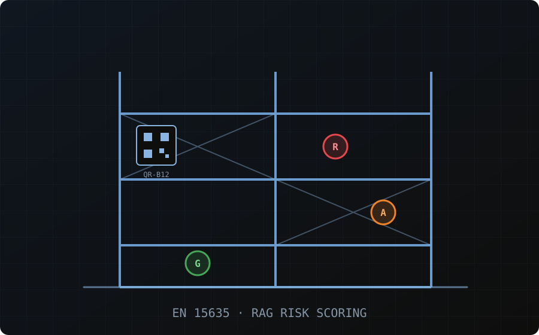

››› Audit Scope
Three layers of structural intelligence
Building Structure Audits
Chartered-engineer-led periodic reporting on the facility's primary and secondary structure.
Rack Structure Audits
EN 15635-aligned inspection and certification for every rack row and bay.
MHE Intelligence
Incident logging plus safety, productivity, and utilisation dashboards for material handling equipment.
››› Methodology
The 8-step digital-twin audit workflow
Site Mapping
CAD data and warehouse geometry are captured.
Digital Twin Build
Rack rows, bay IDs, and uprights are digitized into the twin.
QR Tagging
Every upright gets a unique QR code, linking the physical asset to its digital ID.
EN 15635 Audit & Risk Classification
Engineer-led inspection with RAG scoring — Red (immediate action), Amber (within 4 weeks), Green (monitor).
Rack Structure Integrity Tests
Upright alignment, beam deflection, member distortion profiling, ultrasonic thickness, and bolt tightness checks.
BOQ & Repair Plan
An OEM-validated bill of quantities and repair plan is auto-generated.
Closure Tracking
Repairs are tracked digitally through to completion, with verified evidence.
Certification
A stability certificate is issued post-rectification, with a full digital audit trail.
››› The Shift
Annual PDF vs. continuous monitoring
| What you get today | What you actually need |
|---|---|
| Static PDF, filed and forgotten | Live digital twin, always current |
| Once-a-year visibility | Continuous rack-health monitoring |
| Manual or no follow-up | Workflow-based repair closure with evidence |
| No trend data | Damage recurrence analytics & hot-zone identification |
| No bay-level tracking | Bay-level QR identity per upright |
| Certification expires silently | Traceable lifecycle record, audit-ready always |
››› Programme Tiers
Choose the level of assurance your facility needs
Essential
Get compliant and get a baseline
- Digital twin creation
- EN 15635 inspections
- QR integration
- RAG categorization
- Vertical alignment & beam deflection tests
- Standardized reports + BOQ
- 3-month platform access
- Preventive maintenance planning
Performance
Continuous assurance across your network
- Everything in Essential
- Continuous monitoring programme
- Recurring inspection cycles
- Certification renewal
- Multi-site governance dashboards
Premium
Engineering-grade structural analysis
- Everything in Performance
- Ultrasonic thickness measurement
- FEM (finite element) analysis
- Safe Working Load (SWL) calculations
- Utilisation & deflection ratios
››› Business Value
The economics of continuous monitoring
Approximate figures for reference, based on a ~1 lakh sq. ft. warehouse — verify current figures with our team before treating them as a quote.
| Annual-only model | Continuous programme | |
|---|---|---|
| Inspection cost | approx. ₹1.5–4L | approx. ₹5–10L all-in |
| Reactive / prevented repairs | approx. ₹6–25L reactive | approx. ₹0.5–3L prevented |
| Downtime per incident | approx. ₹5–15L/day | near-zero downtime |
| Legal exposure | unlimited | protected legal defence |
| Frames replaced / year | approx. 15–25 | approx. 5–10 |
Typical reported ROI: approx. 3×–8×, with damage frequency dropping from roughly 5% to 1–2%.
Turn your next audit into a living safety record
Start with a site walk and a scoping conversation — we'll recommend the right programme tier.